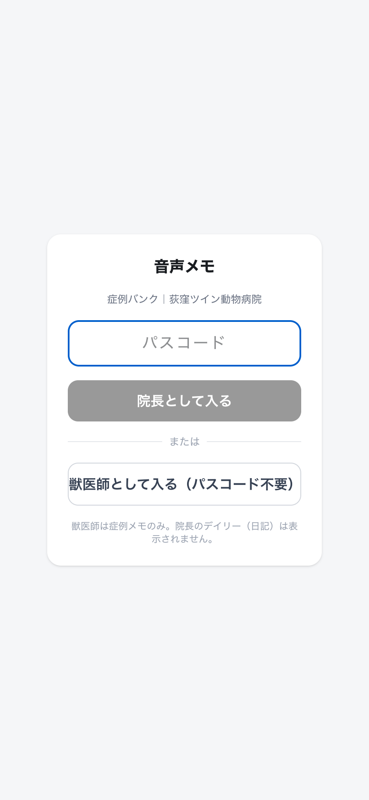
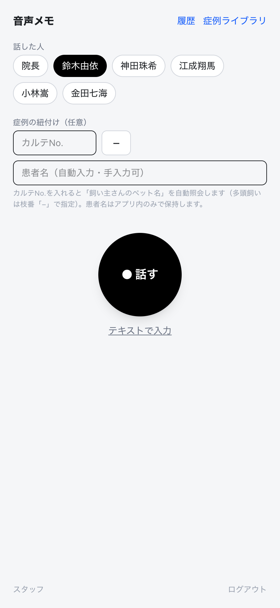

| 場所 | URL・必要なもの |
|---|---|
| 院内（病院のWi-Fi） | https://192.168.20.250:3701 Tailscaleは要りません。病院のWi-Fiにつないで、このURLをそのまま開いてください。初回だけ「接続はプライベートではありません」等の警告が出ますが →「詳細（を表示）」→「このWebサイトにアクセス／このまま進む」で開けます（院内の安全なアプリです）。 |
| 院外（自宅など） | https://serverpc.tail2de5bb.ts.net:8448 院外から使う時だけ Tailscale の設定が必要です（分からなければ院長へ）。 |

「獣医師として入る（パスコード不要）」を押すだけです。パスコードは要りません。一度入ると同じ端末では約30日間そのまま使えます。
（「院長として入る」は院長用です。）

上のボタンから自分の名前を選びます。一度選ぶと次回から自動で選ばれています。
送信すると結果カードが出ます。
| 表示 | 意味 |
|---|---|
| ⏳ 文字起こし中… | 音声を文字に変換中。このまま次の録音に進んでOK。 |
| 🗂 症例メモ ＋ 🐾患者名 | 文字起こし完了。患者名もこの時点で表示されます。 |
| 編集 | 文字起こしの誤りをその場で直せます。 |
| このメモを取り消す | 間違えて登録した時に取り消し（確認が2回出ます）。 |
右上の「症例ライブラリ」から、これまでの症例メモを一覧できます。
各症例には、内容から自動でタグが付きます。
犬 歯科・口腔外科 歯冠破折・歯内治療 / 猫 循環器 僧帽弁閉鎖不全症
| タグ | 内容 |
|---|---|
| 犬 / 猫 | 本文から分かる場合に自動で付きます。 |
| 診療科（大分類） | 歯科・口腔外科／循環器／消化器／皮膚科／整形外科／腫瘍 …など。 |
| 小分類 | 歯科・循環器はさらに細かく（歯周病・抜歯／僧帽弁閉鎖不全症・不整脈 など）。 |
上の検索欄に診療科・病名・カルテNo.・患者名などを入れると絞り込めます（例：「歯周病」「循環器」「犬」）。言い忘れた語でもタグから当たることがあります。
各カードの「削除」で消せます（確認が2回出ます）。履歴（右上「履歴」）からも削除・編集できます。
| 質問 | 答え |
|---|---|
| マイクが使えない | https（鍵マーク）のURLで開いているか確認してください。初回はマイクの許可を「許可」に。それでもダメなら「テキストで入力」を使えます。 |
| 患者名が自動で入らない | カルテNo.を入れて枠の外をタップすると照会します。多頭飼いは枝番（例 1234-1）が要ります。見つからなければ手入力でOK。 |
| 文字起こしがおかしい | 結果カードや履歴の「編集」で直せます。専門用語は自動補正しますが、最終確認をお願いします。 |
| 日記は使えないの？ | 日記（デイリー気づき）は院長専用です。スタッフは症例メモをお使いください。 |
| 使いにくい・こうしてほしい | 改善要望はいつでも院長まで。すぐ直せることが多いです。 |